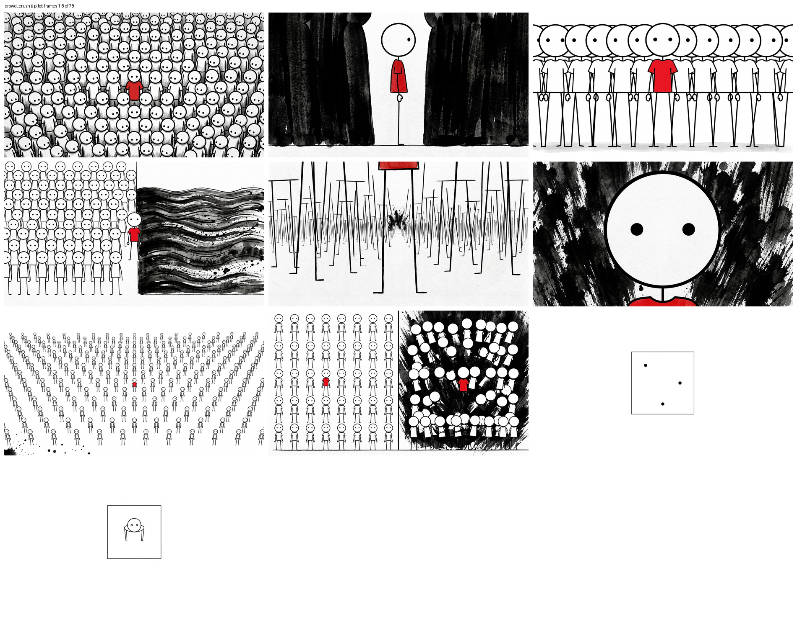

crowd_crush — pilot animatic
10 of 78 frames · 22.5s · silent · each frame held for its real word-locked
duration at 2.75 words/sec. This is the cut rhythm the Kaggle encode will produce.
10 / 78 frames22.5 s1376×768
30 fpsno audio yet
All 10 frames

Downloads
preview_pilot.mp4 ·
preview_pilot.gif ·
pilot_sheet.png